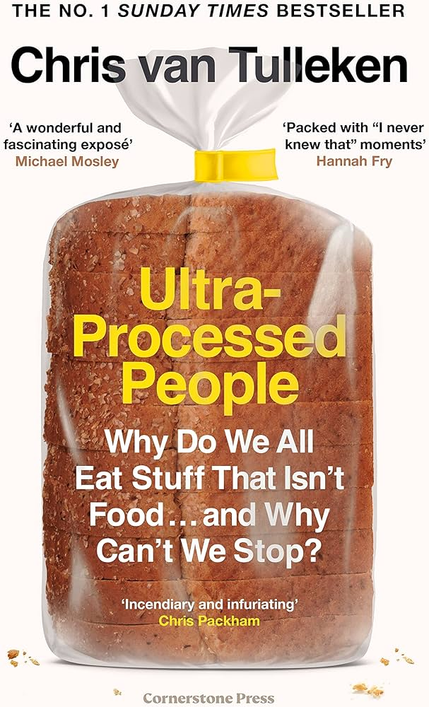

"Ultra-Processed People" is a critical examination of the impact of ultra-processed foods (UPF) on health and society, authored by Chris van Tulleken, a doctor and medical journalist. The book delves into how these foods, which make up a significant portion of modern diets, are not just unhealthy but also fundamentally alter our relationship with food.
Key Concepts
Definition of Ultra-Processed Foods: Van Tulleken defines UPF as foods that are industrially manufactured and contain ingredients not typically found in a home kitchen. These include packaged snacks, frozen meals, sodas, and fast food, which are designed to be convenient and appealing but lack nutritional value.
Health Implications: The author argues that UPF contributes to various health issues, including obesity, diabetes, and heart disease. He highlights that UPF can trick our brains into overeating by creating cravings for more food, similar to addictive substances. This is due to their calorie-dense, nutrient-poor nature, which disrupts our natural hunger and satiety signals.
Environmental Impact: The production of UPF is resource-intensive and contributes significantly to climate change. The book discusses how the industrial processes involved in creating these foods lead to increased carbon emissions and environmental degradation.
Economic Factors: Van Tulleken explores the economic motivations behind the rise of UPF, noting that these foods are often cheaper to produce than whole, minimally processed foods. This has led to a shift in dietary patterns, particularly in lower-income countries, where traditional diets are being replaced by UPF, resulting in rising obesity rates.
Personal Experimentation
To illustrate his points, van Tulleken conducts a personal experiment where he switches his diet between ultra-processed and minimally processed foods. He documents the physical and psychological effects of consuming a diet high in UPF, noting changes in his cravings, energy levels, and overall health.
Recommendations
The book calls for greater awareness of the effects of UPF and advocates for regulatory changes to the food industry. Van Tulleken emphasizes the need for consumers to be informed about what they are eating and suggests reducing UPF consumption in favor of whole, minimally processed foods.
Overall, "Ultra-Processed People" serves as a wake-up call about the hidden dangers of modern food production and consumption,
urging readers to reconsider their dietary choices for better health and environmental sustainability.